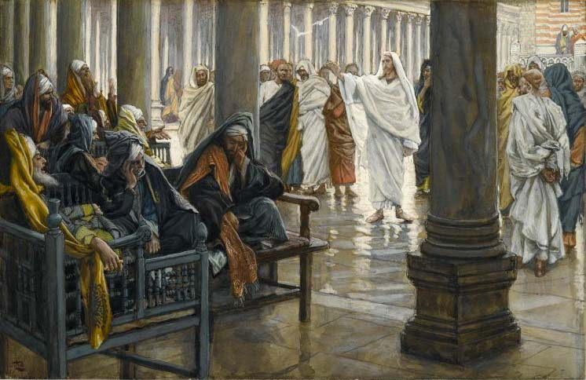

Matthew 23 — The Mister Translation

⚠ Tissot has put them in the seats. Verse 6 complains that they love “the first seats in the synagogues,” and verse 2 says they sit on Moses’ own chair — and here they are on carved benches in the front row, collapsed inward, heads in hands, faces hidden. Note also that Christ is not confronting them face to face: he is already walking away down the portico, which is what the chapter actually does — verse 1 addresses “the crowds and his disciples,” talking about the scribes rather than to them until Jerusalem itself is addressed at the end. One of some 350 gouaches Tissot made for an illustrated life of Christ after travelling to Palestine to study the settings; the Brooklyn Museum bought the whole series in 1900 and has held it since; Tissot made three trips to Palestine to record the landscape, architecture and dress first-hand. This is the second Tissot in the library, after chapter 10’s.
_-_James_Tissot.jpg){kind=link}
Translator’s Notes — verse by verse
Each note explains this translation's choice and compares the seven versions on the shelf. Quotations from copyrighted versions (NIV, TLB, NWT) are kept to short phrases for comparison; KJV, Geneva, Douay-Rheims and ASV are public domain.
Nobody interrupts this chapter. The temple controversy ended at 22:46 with "nor did anyone dare ask him anything more," and this is the consequence: thirty-eight verses of uninterrupted speech, the longest sustained attack in the Gospel. ⚠ Note who it is addressed to — "the crowds and his disciples" (v1). The scribes and Pharisees are talked about, not to, until Jerusalem itself is addressed at the end.
And it opens by conceding their authority. "On Moses' seat the scribes and the Pharisees have sat down… so do and observe everything whatever they tell you." That sentence has made a great deal of trouble, and it should: it is a straightforward instruction to obey the people about to receive seven woes. ⚠ The readings offered: that Jesus grants the office while condemning its holders; that kathedra Mōuseōs means the physical teaching-seat in a synagogue and so the authority is real but delegated; that v3's first clause is heavy irony; and that Matthew has preserved a saying from a stage when his community still lived under synagogue discipline. The library gives them and does not choose. It notes only that the charge which follows is never that their teaching is wrong — it is that "they say and do not do."
Phylacteries and fringes. Phylaktēria are the small leather cases holding Torah texts, bound on arm and forehead in obedience to Deuteronomy 6:8 — the Hebrew word is tefillin, and "phylactery" is Greek for an amulet, a protective charm, which is either Matthew's wry choice or simply what Greek-speakers called them. Kraspeda are the tassels commanded at the four corners of a garment (Numbers 15:38-39). ⚠ Both details land differently because of where this Gospel has already used the second: the bleeding woman touched Jesus' own kraspedon (9:20), and crowds begged to touch it (14:36) — so he wears them. The complaint is not the tassels. It is the lengthening: megalynousi, they make them big.
Three titles, and the awkward middle one. Do not be called Rabbi; call no one on earth father; do not be called leaders (kathēgētai, guides or tutors). ⚠ The middle prohibition is the one Christian practice has most conspicuously not kept, and the library will say so plainly rather than skirt it: "Father" as a clerical title is in obvious tension with v9, and the standard defences (that Paul calls himself a father to his converts; that the verse forbids a claim to ultimate paternity rather than a form of address) are real arguments and are also arguments for a practice the verse appears to prohibit. Readers may weigh them; this translation's job is to print what the sentence says. Note the pattern: each ban is followed by "for one is your…", so the objection is to a title that puts a man in a place already occupied.
And the hinge back to chapter 20. "The greater of you will be your servant" is 20:26 repeated almost verbatim, with the same word, diakonos — and v12's exalted/humbled reversal is the same logic as 18:4. The woes are about to be aimed at people who took the first seats; the standard was set three chapters ago.
Seven, and a gap where an eighth was inserted. The woes run 13, 15, 16, 23, 25, 27, 29 — seven in the critical text, which is almost certainly Matthew's design, since he arranges in sevens elsewhere. ⚠ The Byzantine tradition has an eighth (the widows'-houses woe, printed above as the gap at verse 14), and its presence breaks the seven. See the block between verses 13 and 15 for the evidence, including the detail that the extra line cannot even agree with itself about where to stand.
Hypocrite, and what it meant first. Hypokritēs is a stage word: an actor, one who speaks from behind a mask. Matthew uses it more than the rest of the New Testament together, and Jesus' complaint throughout this chapter is consistently about the gap between the outside and the inside, which is exactly what the word already meant before it acquired its moral sense.
"Blind guides." Hodēgoi typhloi — and chapter 15's note said this title would return by name in these woes, which it does twice (v16, v24), after 15:14's blind man leading a blind man into a pit.
The oath argument, and why it is not pedantry. The system being attacked distinguished binding oaths from non-binding ones by what you swore on: the gold of the sanctuary binds, the sanctuary itself does not; the gift on the altar binds, the altar does not. Jesus' reply is that the distinction is upside-down — the sanctuary is what makes the gold holy, not the reverse — and then he collapses the whole apparatus: swear by the altar and you have sworn by everything on it; swear by the sanctuary and you have sworn by the one dwelling in it; swear by heaven and you have sworn by God's throne and by the one seated on it. ⚠ There is no oath that does not reach God, which is the same conclusion the Sermon reached by the shorter route: do not swear at all (5:34).
The tithe of the herb garden. Mint, dill and cumin are kitchen herbs, and tithing them is scrupulous beyond what the Law requires — which is the point: the charge is not laxity. What has been let go is ta barytera tou nomou, "the weightier matters" — a real term from legal debate about relative gravity — named as judgement, mercy and pistis. ⚠ That last word can be "faith" or "faithfulness," and here it is almost certainly the second, the covenant-keeping quality (Hebrew emunah) that stands beside justice and mercy in Micah 6:8's famous triad. KJV and ASV read "faith"; NIV and NWT read "faithfulness," which is tighter here and is followed. And note the last clause, which is the whole balance of the verse: these you should have done without letting those go — the herbs are not cancelled.
The joke, and the fact that it is one. "You strain out the gnat and gulp down the camel." Straining wine through cloth to remove insects was actual practice, because the smallest winged creature made the drink unclean — and the camel is the largest unclean animal in the neighbourhood. ⚠ The two words may also have rhymed in Aramaic (qalma, a gnat or louse, against gamla, a camel), which if so makes it a pun as well as a cartoon. This is the camel's second appearance in four chapters, after the needle's eye at 19:24. Diÿlizontes is the technical word for filtering; katapinontes is to gulp or swallow down whole, and the shelf's "swallow" is right but tamer than the Greek.
Cups and tombs, the same argument twice. Outside clean, inside full — of harpagē (plunder, what is seized) and akrasia (lack of self-control). Then the image that made the phrase proverbial: whitewashed tombs, taphoi kekoniamenoi. ⚠ The whitewashing was not decoration; graves were limed so they could be seen and avoided, since contact with a tomb made a person ritually unclean for seven days (Numbers 19:16). So the metaphor is sharper than "pretty on the outside": these are things marked as beautiful which are in fact marked as contagious, and the whitewash that was meant as a warning has been mistaken for ornament. Luke uses the related image of unmarked graves that people walk over unawares — the opposite failure.
The seventh woe is the trap of monuments. They build the prophets' tombs and decorate them, and say they would never have joined their fathers — and the reply is that the building testifies against them: you know exactly who killed them, because you are maintaining the graves. Then "fill up the measure of your fathers," an imperative that is not advice but prophecy, and "brood of vipers," which in this Gospel was John the Baptist's phrase for the same people (3:7).
⚠ Abel to Zechariah — and the name is a real problem. "From the blood of Abel the righteous to the blood of Zechariah son of Barachiah, whom you murdered between the sanctuary and the altar." The span is meant to be the whole of Scripture: Abel is the first murder in Genesis, and a priest named Zechariah is stoned "in the court of the house of Jehovah" at 2 Chronicles 24:20-22 — the last murder in the Hebrew Bible's own running order, since Chronicles stands last. That is a first-to-last sweep, and it works. ⚠ Except that the Chronicles Zechariah is son of Jehoiada. "Son of Barachiah" is the parentage of the prophet Zechariah (Zechariah 1:1), who is not recorded as having been murdered. The proposals: that Matthew or a copyist has conflated two men of the same name; that the prophet was in fact killed and the tradition is lost; that Jehoiada had a second name; or that a different Zechariah is meant, including one killed in the temple in AD 68 whom Josephus names. Luke's parallel omits the patronymic entirely, which some read as him removing a difficulty he could see. ⚠ The library reports the problem and does not resolve it, and does not quietly print "son of Jehoiada," which is what a translation confident of the answer would do.
The register changes without warning. Thirty-five verses of prosecution stop, the third person becomes second, and the address is no longer the scribes but the city: "Jerusalem, Jerusalem." ⚠ Nothing prepares it, and the shift is the most striking thing in the chapter. Note the tense of the complaint — posakis ēthelēsa, "how often I wanted" — and its answer, ouk ēthelēsate, "and you were not willing": the same verb, once of him and once of them, and the whole tragedy sits in the mismatch.
The hen. Ornis is simply a bird, usually a domestic fowl, and nossia are her chicks. ⚠ Two things are worth saying. First, the image is feminine and maternal, and it is Jesus' own image for himself — the shelf translates it without fuss (KJV "as a hen gathereth her chickens") and this translation keeps it plainly. Second, the sheltering-wings figure is thoroughly at home in the Psalms (17:8, 91:4, "under his wings you will find refuge"), where the wings are God's, so the sentence is doing more than picking a homely comparison.
"Your house is left to you." The house is the temple, three verses after he walked out of it. ⚠ The word desolate (erēmos) is a genuine textual question: most editions print it, one major critical edition does not, and without it the line is barer and heavier — "your house is left to you," full stop, with the abandonment implied rather than described. This translation prints it and records the doubt.
And a quotation that has already been shouted. "Until you say: Blessed is the one who comes in the name of the Lord" — Psalm 118:26, which the crowds shouted at the gate two chapters ago (21:9). ⚠ So the chapter ends by making the crowd's acclamation a condition, and the Gospel has now used Psalm 118 three times in three chapters: the crowd sang its ending at 21:9, Jesus quoted its rejected stone at 21:42, and here he hands the ending back as something still to be said. Whether "until you say" is a promise or a sentence is left open, and has been read both ways for as long as there have been readers.
Patterns worth carrying forward
Where this translation keeps the words exact / distinct: "Moses' seat" for kathedra, a physical chair rather than an abstract "seat of authority"; phylacteries kept as the Greek word, with tefillin and the amulet-sense in the note; "lengthen their fringes," where the offence is the size and not the tassels, which he wears himself; "faithfulness" for pistis at v23 (with NIV/NWT, against KJV/ASV "faith"), because it stands beside judgement and mercy; "gulp down" for katapinontes, blunter than "swallow"; and whitewashed tombs with the note that the lime was a warning, not decoration.
Echoes paid. The fringe (v5) — the third and last of the kraspedon appearances the dictionary promised, after 9:20 and 14:36, and this time as a criticism; "blind guides" (vv16, 24) — returning by name in the woes exactly as 15:14's note said; "the greater will be your servant" (v11) — 20:26 almost verbatim, and 18:4's reversal; the camel (v24) — its second outing in four chapters, after the needle's eye at 19:24; brood of vipers (v33) — John the Baptist's phrase for the same men at 3:7; oaths (vv16-22) — the Sermon's 5:34 reached by a longer road; and Psalm 118 (v39) — the third use in three chapters, after 21:9 and 21:42.
Echoes planted. The house left desolate (v38), which the next chapter opens by walking out of and predicting the fall of; "this generation" (v36), which the Olivet discourse uses again and which has carried a great deal of argument since; and until you say (v39), left unresolved.
⚠ And four places the library reports rather than decides. Verse 14, absent from the earliest manuscripts, printed by the KJV tradition, and unable to agree with itself about where to stand — left out with its gap visible and the evidence stated. "Do everything they tell you" (v3), an instruction to obey the men about to receive seven woes, with the readings given and none adopted. "Call no one father" (v9), where the library states the tension with later Christian practice rather than skirting it. And Zechariah son of Barachiah (v35), where the name does not match the murder the verse appears to mean — reported, and not silently corrected.
Next in this book: chapter 24 — the fifth and last discourse begins. He walks out of the temple, a disciple points at the stonework, and the answer is "not one stone will be left on another"; then the questions that structure the rest of the Gospel — "when will these things be, and what is the sign of your presence?" Birth pangs, the abomination in the holy place, days cut short, false messiahs, lightning from east to west, a fig tree in leaf, and the sentence the library will have to handle carefully: "about that day and hour nobody knows, not even the Son."